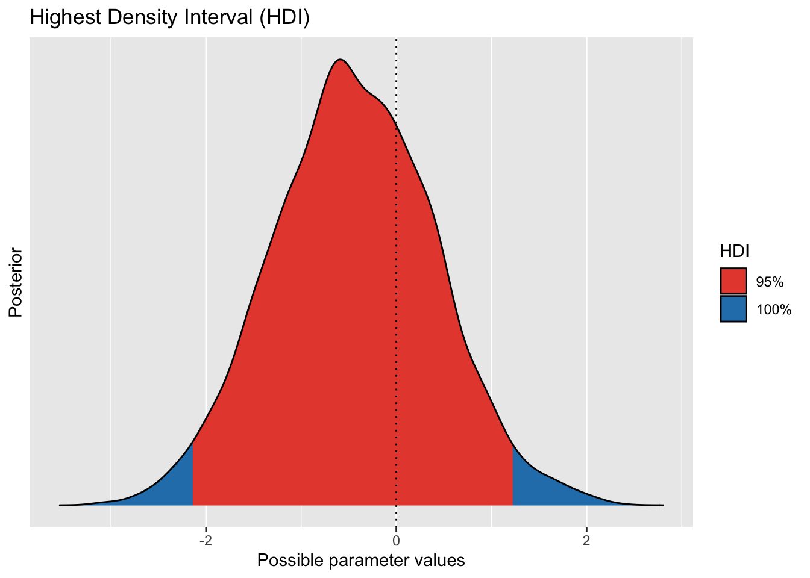
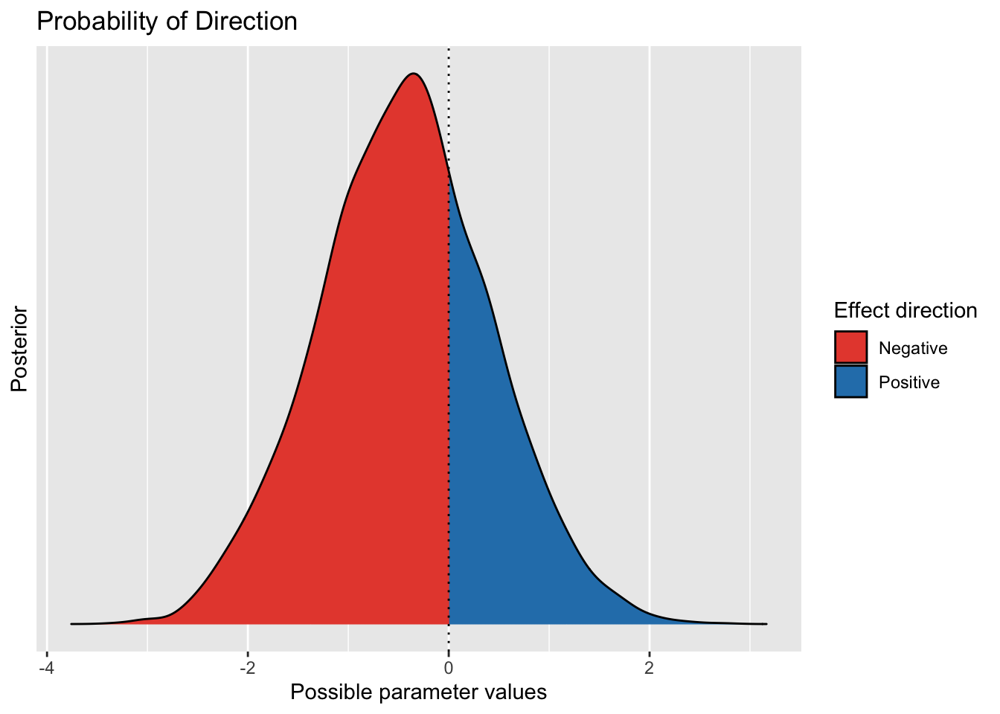
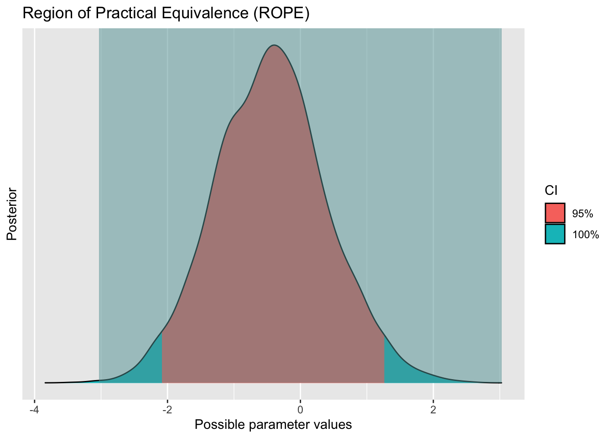
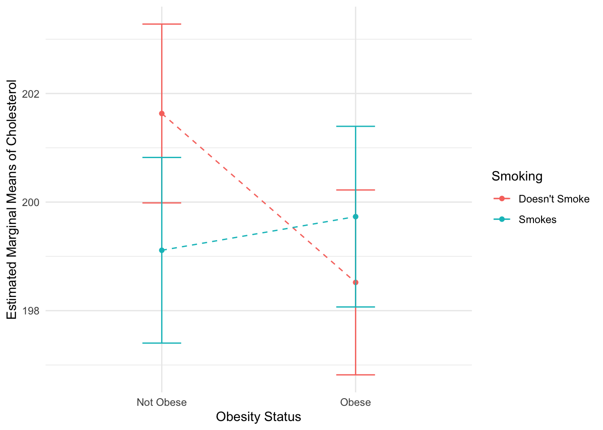
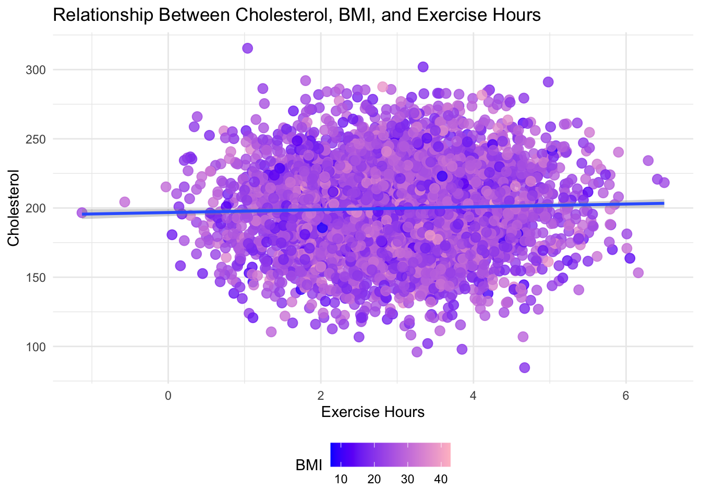

The dataset we will be using is called “Heart Attack Prediction,” downloaded from Kaggle. It includes 5,000 observations (randomly sampled and independent) and 26 variables:
Patient ID, Age, Sex (categorical), Cholesterol (continuous), Blood Pressure (continuous), Heart Rate (continuous), Diabetes (dummy coded, 0/1), Family History (dummy coded, 0/1), Smoking (dummy coded, 0/1), Obesity (dummy coded, 0/1), Alcohol Consumption (dummy coded, 0/1), Exercise Hours (continuous), Diet (categorical, Healthy/Average/Unhealthy), Previous Heart Problems (dummy coded, 0/1), Medication Use (dummy coded, 0/1), Stress Level (continuous), Sedentary Hours Per Day (continuous), Income (continuous), BMI (body mass index; continuous), Triglycerides (continuous), Physical Activity Days Per Week (discrete), Sleep Hours Per Day (discrete), Country (categorical), Continent (categorical), Hemisphere (categorical), and Heart Attack Risk (dummy coded, 0/1).
Method
We are going to test four research questions regarding the data on heart attack risk, using RStudio to statistically analyze the data:
1. Is there a difference in Cholesterol levels between female and male patients?
This question will be analyzed in three ways learned in class:
a. Null hypothesis significance testing (NHST): here, the null hypothesis would be that there is no difference between the genders, while the alternative hypothesis would state that there is a difference.
b. Equivalence test: here, the main question would be if Cholesterol levels for the genders are equivalent within a certain margin of error.
c. Bayesian Testing: here, we will test the probability that Cholesterol levels for females’ is different than that of males’, given the data and prior beliefs.
Before analyzing the data to answer this question, we will conduct a power analysis to determine the sample size needed.
2. How does Cholesterol levels vary across different combinations of Obesity and Smoking status? This question will be analyzed using a two-way analysis of variance (ANOVA). Our dependent variable will be Cholesterol, while our between-subject variables will be Obesity and Smoking.
3. Does BMI and Exercise Hours predict Cholesterol levels?
This question will be analyzed using a multiple regression model.
4. Does Exercise Hours Per Week moderate the relationship between Family History and Cholesterol?
This question will be analyzed using moderation analysis. In addition to this question, we will also be comparing the moderation model to the additive version to see which is a better fit and splitting the data of each model into training and test sets.
a new package we will be using in this assignment and that we have not learned in class is the “pwr” package. We chose to use this specific package to calculate how many participants are needed in each group to get to a statistical power of 90% in the t-test used in our first research question.
Results
The First Question
First, we conducted a power analysis to determine the required sample size for a two-sample t-test. The parameters we considered were effect size (Cohen’s d) of 0.2 (bad scenario where there is only a small effect in the real world), a significance level of 0.05, and a desired power of 0.9 under a two-sided alternative hypothesis. The analysis yielded a calculated sample size of approximately 526 participants per group, indicating the number needed to achieve a statistical power of 90%. This ensures a larger likelihood of correctly rejecting the null hypothesis and detecting a meaningful effect size.
The t-test results showed that there is no significant difference between male patients (M = 200, SD = 29.76) and female patients (M = 199.56, SD = 30.86) in Cholesterol levels [t(4998) = 0.51, 95% C.I. (-1.23, 2.12),p = .6]. In assessing Cholesterol levels between male (M = 200, SD = 29.76) and female (M = 199.56, SD = 30.86) patients using two one-sided t-tests using equivalence testing, the results indicated that neither the test for the lower bound [t = 0.066, p = 0.47] nor the test for the upper bound [t = -1.099, p = 0.136] reached significance. The equivalence test overall was not significant [t= 0.07, p = 0.473], indicating that the difference in cholesterol levels between male and female groups does not fall within the predefined equivalence interval. Therefore, we cannot reject the null hypothesis that there is a difference in Cholesterol levels between males and females.
The Bayesian t-test indicated strong evidence in favor of the null hypothesis (BF=.036). This Bayes Factor suggests that the observed data are much more likely under the null hypothesis compared to the alternative hypothesis. The 95% Highest Density Interval (HDI) for the true difference between groups in cholesterol levels is estimated to be [-2.10, 1.19]. This interval spans both negative and positive differences, suggesting non-significant differences between the groups. The probability distribution (pd) indicates a 69.73% likelihood for the true difference to be slightly higher for a negative difference. Additionally, the Region of Practical Equivalence (ROPE) is defined as [-3.03, 3.03], where differences are considered negligible. Notably, 100% of the posterior distribution falls within this ROPE, indicating strong support for the practical equivalence between the groups. Cohen’s d was estimated to be -0.01 [95% CI (-0.07, 0.04)], suggesting a negligible negative effect size.
library(afex) library(emmeans) library(effectsize)library(ggeffects) library(parameters) library(performance) library(pwr)library(ggplot2)library(dplyr)library(correlation)library(TOSTER) library(BayesFactor) library(bayestestR)data<-read.csv("/Users/sabahanani/Desktop/תואר שני/Semester A/שיטות מחקר מתקדמות/עבודה מסכמת/206683112_206357170.csv")#NHST, Bayes, & Equivalence test#first of all, power analysispwr.t.test(d=0.2, sig.level=0.05, power=0.9, alternative="two.sided")
Two-sample t test power calculation
n = 526.3332
d = 0.2
sig.level = 0.05
power = 0.9
alternative = two.sided
NOTE: n is number in *each* group
Two Sample t-test
data: data$Cholesterol[data$Sex == "Male"] and data$Cholesterol[data$Sex == "Female"]
t = 0.51648, df = 4998, p-value = 0.6055
alternative hypothesis: true difference in means is not equal to 0
95 percent confidence interval:
-1.238192 2.123963
sample estimates:
mean of x mean of y
200.0004 199.5575
# t-test results for Cholesterol levels between female and male patients:# t-value = 0.51, p-value = 0.6, 95% CI: [-1.23, 2.12]# Conclusion: No significant difference in cholesterol levels observed between male and female patients.# 2. equivalence t-test:t_TOST(formula = Cholesterol ~ Sex, data = data,eqb = .5, smd_ci ="t", var.equal =TRUE)
Two Sample t-test
The equivalence test was non-significant, t(4998) = 0.07, p = 0.47
The null hypothesis test was non-significant, t(4998) = -0.516p = 0.61
NHST: don't reject null significance hypothesis that the effect is equal to zero
TOST: don't reject null equivalence hypothesis
TOST Results
t df p.value
t-test -0.51648 4998 0.606
TOST Lower 0.06661 4998 0.473
TOST Upper -1.09957 4998 0.136
Effect Sizes
Estimate SE C.I. Conf. Level
Raw -0.44289 0.85750 [-1.8536, 0.9678] 0.9
Hedges's g -0.01461 0.02828 [-0.0611, 0.0319] 0.9
Note: SMD confidence intervals are an approximation. See vignette("SMD_calcs").
# Equivalence t-test results for Cholesterol levels between female and male patients:# t-value = 0.07, p-value = 0.47# TOST Lower: 0.06, p-value = 0.473# TOST Upper: -1.09, p-value = 0.13# Conclusion: The equivalence test was not significant, supporting the null hypothesis that cholesterol levels between male and female groups are not equivalent.# 3. Bayesian: Bayesian_model <-ttestBF(formula = Cholesterol ~ Sex, data = data)describe_posterior(Bayesian_model) # difference
Summary of Posterior Distribution
Parameter | Median | 95% CI | pd | ROPE | % in ROPE | BF | Prior
-----------------------------------------------------------------------------------------------------
Difference | -0.44 | [-2.09, 1.28] | 69.77% | [-3.03, 3.03] | 100% | 0.036 | Cauchy (0 +- 0.71)
hdi(Bayesian_model) |>plot()

pd(Bayesian_model) |>plot()

rope(Bayesian_model, range =c(-3.03, 3.03))|>plot()

# hdi: Based on the Bayesian analysis, the true difference between groups is likely to be within the interval [-2.10, 1.19] with a 95% probability.# The interval includes values that span both negative and positive differences, suggesting that there might be non-significant differences between the groups.# pd: The probability that the true difference is negative or positive is 69.73%.# There is unclear support for the true difference being in either the negative or positive direction, but the probability is slightly higher for a negative difference.# rope: The rope is defined as [-3.03, 3.03].# It represents a range where differences within this interval are considered practically equivalent or negligible.# 100% of the posterior distribution falls within this area, indicating strong support for the practical equivalence of the groups.# Cohen's d Effect Size:effectsize::effectsize(Bayesian_model)
Cohen's d | 95% CI
-------------------------
-0.01 | [-0.07, 0.04]
- Estimated using pooled SD.
# The estimated Cohen's d is -0.01 with a 95% CI [-0.07, 0.04], indicating a negligible negative effect size and no statistically significant difference between the groups.
The Second Question
A two-way ANOVA was conducted to examine the effects of Obesity and Smoking status on Cholesterol levels. Obesity had two levels (Not Obese/Obese), and Smoking status also had two levels (Doesn’t Smoke/Smokes). We found no significant main effect for Obesity [F(1, 4996)=2.11, p=0.146] and no significant main effect for Smoking status [F(1, 4996)=0.58, p=.446]. We found a significant interaction effect between Obesity and Smoking status on Cholesterol levels [F(1, 4996)=4.73, p=0.03], suggesting that the relationship between Obesity and Cholesterol varies depending on an individual’s Smoking status.
Further examination of this significant interaction effect using simple effect analysis revealed significant differences in Cholesterol levels between obese and non-obese individuals among non-smokers [contrast estimate=3.11, SE=1.21, t(4996)=2.57, p=.01], indicating higher Cholesterol levels among non-smoking non-obese individuals compared to their obese counterparts. This difference was not significant among smokers [contrast estimate=-0.62, SE=1.22, t(4996)=.5, p=.61]. The interaction effect is illustrated in the code’s output.
#let's plotem_df <-as.data.frame(em_Obesity_by_Smoking)ggplot(em_df, aes(x = Obesity, y = emmean, color = Smoking)) +geom_point() +geom_errorbar(aes(ymin = lower.CL, ymax = upper.CL), width =0.2) +geom_line(aes(group = Smoking), linetype ="dashed") +labs(x ="Obesity Status", y ="Estimated Marginal Means of Cholesterol") +scale_color_manual(values =c("red", "blue")) +scale_x_discrete(labels =c("0"="Not Obese", "1"="Obese")) +scale_color_discrete(labels =c("0"="Doesn't Smoke", "1"="Smokes")) +theme_minimal()

The Third Question
A multiple linear regression analysis was conducted to investigate the relationship between Cholesterol levels and two predictor variables: BMI and Exercise Hours Per Week. The regression model yielded a significant overall relationship [F(2, 4997)=4.425, p=.01]. However, the model’s explanatory power was limited, with an adjusted R-squared of .001, indicating that only approximately 0.1% of the variance in Cholesterol levels could be explained by BMI and Exercise Hours Per Week. The individual predictors were examined further and indicated that Exercise Hours Per Week was a significant predictor [β=1, 95% C.I. (0.17, 1.84), p=0.019], but BMI was not [β=.15, 95% C.I. (-0.02, 0.32), p=0.07]. The model is illustrated in the code’s output.
fit<-lm(Cholesterol ~ BMI + ExerciseHours , data = data)summary(fit)
Call:
lm(formula = Cholesterol ~ BMI + ExerciseHours, data = data)
Residuals:
Min 1Q Median 3Q Max
-116.10 -20.22 -0.33 20.96 118.29
Coefficients:
Estimate Std. Error t value Pr(>|t|)
(Intercept) 193.01798 2.49378 77.400 <2e-16 ***
BMI 0.15090 0.08539 1.767 0.0773 .
ExerciseHours 1.00471 0.42786 2.348 0.0189 *
---
Signif. codes: 0 '***' 0.001 '**' 0.01 '*' 0.05 '.' 0.1 ' ' 1
Residual standard error: 30.29 on 4997 degrees of freedom
Multiple R-squared: 0.001768, Adjusted R-squared: 0.001368
F-statistic: 4.425 on 2 and 4997 DF, p-value: 0.01202
#let's plot the modeldata$ExerciseHours <-as.numeric(as.character(data$ExerciseHours)) #converting to numeric so we don't run into errorsggplot(data, aes(y = Cholesterol, x = ExerciseHours, color = BMI)) +geom_point(size =3, alpha =0.8) +geom_smooth(method ="lm") +labs(title ="Relationship Between Cholesterol, BMI, and Exercise Hours",x ="Exercise Hours",y ="Cholesterol",color ="BMI") +scale_color_gradient(low ="blue", high ="pink") +theme_minimal() +theme(legend.position ="bottom")

# Analysis of the standardized coefficients:# ExerciseHours has a standardized coefficient of 0.03. P-value < 0.05.# BMI has a standardized coefficient of 0.02. P-value > 0.05# Therefore, based on the standardized coefficients:# ExerciseHours has a larger standardized contribution to predicting cholesterol levels compared to BMI.# Conclusion: ExerciseHours shows a statistically significant positive association with cholesterol levels, whereas BMI does not.
The Fourth Question
The moderation analysis examined the moderating effect of Exercise Hours Per Week on the relationship between Family History and Cholesterol levels. The outcome variable for analysis was Cholesterol levels, the predictor variable was Family History, and the moderator was Exercise Hours Per Week. The model yielded an overall significant relationship, despite a low explanatory power [F(3, 4996)=2.63, p=0.04, adjusted R2=.0015]. The interaction between Family History and Exercise Hours Per Week was not significant [β=-1.15, 95% C.I. (-2.82, 0.53), p=0.18]. Further examination of the predictors revealed that Exercise Hours Per Week was a significant predictor [β=1.6, 95% C.I. (0.41, 2.79), p=.009], but Family History was not [β=3.95, 95% C.I. (-1.33, 9.23), p=.142]. These results overall suggest that Exercise Hours Per Week is not a moderator of the relationship between Family History and Cholesterol levels.
The additive model was explored to compare it to the moderative model. The regression analysis revealed that the model is overall significant, despite a low explanatory power [F(2, 4997)=3.05, p=0.04, adjusted R2=.0008]. Further exploration showed that Exercise Hours Per Week was a significant predictor [β=1.02, 95% C.I. (0.18, 1.86), p=0.017], but Family History was not [β=0.53, 95% C.I. (-1.15, 2.21), p=0.533].
Results of the model comparison analysis (between the moderative and additive model) showed that the additive model, while penalizing for model complexity, is a better fit to the data [BIC=48331.8, RMSE=30.29, R2=.001] than the moderative model [BIC=48338.6, RMSE=30.28, R2=.002]. However, this is a relatively small difference given the explanatory power of each model. For each of the moderative and additive models, we split the data into training and test sets. The MSE results for each model’s training and testing sets are shown in the code’s output.
As we can see in Figure 3 below, the test set of both the moderation and additive models has a higher MSE value than the training set. This indicates a pattern of overfitting, where the model performs better on the training set (lower MSE) than on the testing set (higher MSE).
m_additive <-lm(Cholesterol ~ FamilyHistory + ExerciseHours,data = data)m_moderation <-lm(Cholesterol ~ FamilyHistory * ExerciseHours,data = data)#let's check model parameters and trendssummary(m_moderation)
Call:
lm(formula = Cholesterol ~ FamilyHistory * ExerciseHours, data = data)
Residuals:
Min 1Q Median 3Q Max
-117.577 -20.158 -0.386 21.042 119.018
Coefficients:
Estimate Std. Error t value Pr(>|t|)
(Intercept) 194.7482 1.9065 102.148 < 2e-16 ***
FamilyHistory 3.9542 2.6931 1.468 0.14209
ExerciseHours 1.5994 0.6077 2.632 0.00852 **
FamilyHistory:ExerciseHours -1.1463 0.8557 -1.340 0.18043
---
Signif. codes: 0 '***' 0.001 '**' 0.01 '*' 0.05 '.' 0.1 ' ' 1
Residual standard error: 30.3 on 4996 degrees of freedom
Multiple R-squared: 0.00158, Adjusted R-squared: 0.0009808
F-statistic: 2.636 on 3 and 4996 DF, p-value: 0.04807
# Explaining additional model performance:# AIC= 48303.042# AIC is a measure used to compare the goodness of fit of the statistical model, balancing fit with model complexity.# The large AIC value suggests that the model is less likely to be the best model to explain the variance in cholesterol levels.# BIC= 48329.110# BIC is similar to AIC but places a stronger penalty on models with more parameters.# The large BIC value indicates that the model does not fit the data well.summary(m_additive)
Call:
lm(formula = Cholesterol ~ FamilyHistory + ExerciseHours, data = data)
Residuals:
Min 1Q Median 3Q Max
-116.597 -20.078 -0.453 21.125 117.900
Coefficients:
Estimate Std. Error t value Pr(>|t|)
(Intercept) 196.4682 1.4095 139.385 <2e-16 ***
FamilyHistory 0.5341 0.8570 0.623 0.533
ExerciseHours 1.0212 0.4279 2.387 0.017 *
---
Signif. codes: 0 '***' 0.001 '**' 0.01 '*' 0.05 '.' 0.1 ' ' 1
Residual standard error: 30.3 on 4997 degrees of freedom
Multiple R-squared: 0.001222, Adjusted R-squared: 0.0008219
F-statistic: 3.056 on 2 and 4997 DF, p-value: 0.04716